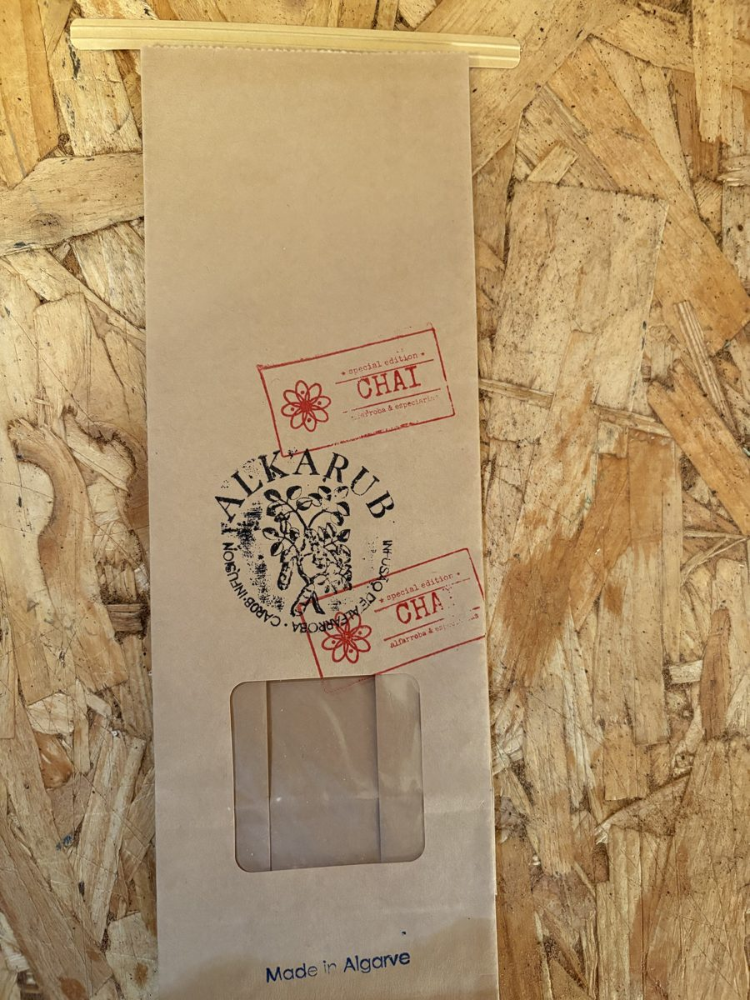
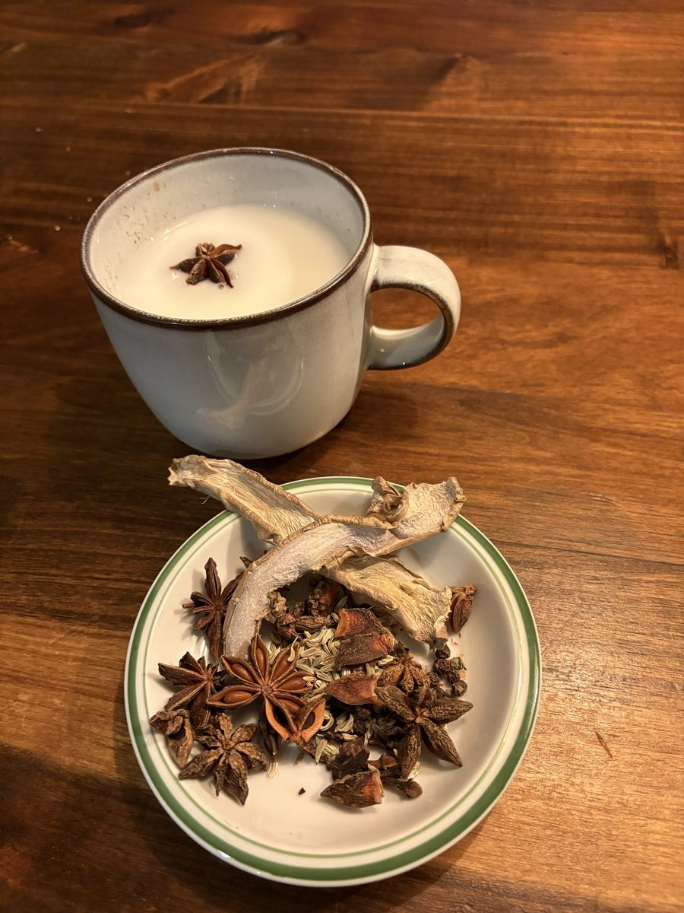

Alkarub Chai: from the Spice Route to the Algarve
In November, Alkarub launches Chai: a special edition that brings together Algarve carob and spices from around the world, 8 ingredients in all. It is inspired by the voyages that set out from the Algarve and opened the sea route to India.

From the Algarve to India
The Algarve is a land of departures. It was from here, from Lagos and Sagres, that Prince Henry the Navigator and Portuguese sailors prepared and launched the voyages that would eventually open the sea route to India.
The spices that arrived along that route changed the tables of Europe. Alkarub Chai closes the circle: carob, the tree of the Algarve, meets the spices that the route to India brought back to us.
What Alkarub Chai is
It is a special edition from Alkarub, handmade in small batches in Budens, in the municipality of Vila do Bispo. It has 8 different ingredients, carob and spices together, chosen to make a warm, aromatic and comforting drink. The ingredients will be revealed at launch.

Which milk to use
Chai is made to be drunk with milk, in the style of traditional chai. You can make it with cow's milk, milk from other animals or a plant-based drink, and it works well whichever you choose. Preparation instructions come on the pack.
Launch and prices
Alkarub Chai launches in November 2026, and prices will be announced then. If you would like to be among the first to know, leave your email on the home page and we will let you know when it is available.
Frequently asked questions
What is Alkarub Chai?
It is a special edition from Alkarub that combines Algarve carob and spices, 8 ingredients in all, inspired by the route to India. It is handmade in small batches.
When does Alkarub Chai launch?
The launch is planned for November 2026. Prices will be announced then.
Which milk can I use?
Cow's milk, milk from other animals or a plant-based drink.
How will I hear about the launch?
Leave your email in the Chai section on the home page and we will tell you when Chai is available.
Tell me when it is out
Leave your email on the home page and we will be in touch at launch.